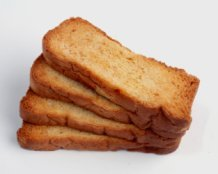

Teething Babies: Your Complete Go-To Survival Guide
Entering the world of teething babies is an uncertain journey into the unknown. Will your baby breeze right through? Or will you have your own
horror stories to share in the next few years?
Having had teething infants on both ends of the spectrum, I can attest that each teething child is different, as is each teething episode.
Some
infants do great until their molars start popping through...others are miserable from the beginning and stay that way.
In order to help you ride these waves without drowning, I've written as many articles covering the subject of teething in every possible angle I can
think of.
I've dubed it the "Your Complete Go-To Survival Guide" because that's exactly what it is. Every question answered, every resource
available to help you sail through this, carrying your infant with you.
In the Beginning...There Were Milk Teeth
Your baby's milk teeth (also called deciduous or baby teeth) were developed in the womb as little tooth buds. At around the 6th week of pregnancy, they
developed as "dental lamina", starting at the front of the mouth and then moving towards the back.
At 8 weeks, there are 10 areas on the top and bottom
that will eventually become teeth. These budding areas will continue to grow until they peek out of the gumline. These teeth will peek
through a few at a time (see the teething schedule below), and then stay put until around age 6, when they are replaced with permanent teeth.
A Simple Teething Schedule for Busy Moms
Wondering what to expect in the world of teething babies? Feel secure with this timeline of when to suspect teething, and where to look for those
protruding nubs. Luckily for us,
teething follows a predictable pattern. You'll never get molars before incisors, etc. (And what exactly are incisors anyway?)
All the questions regarding teeth placement and timing are answered in this article. Also included is a free teething chart so you can
check off your baby's teeth as they come in. Add the date and a brief story and you've got the prefect insert for your baby book!
Read more in this article...
Reading the Signs of Teething in Your Infant
She must be teething. An over-used phrase that can be as easily translated as: I have no idea what is wrong with her. Strip away
the uncertainties with this easy checklist of symptoms.
Naturally, your baby won't have every symptom, but luckily it's a pass/fail test. If you've checked off more than half the boxes, you've most likely
got a teether on your hands. Read more in this article...
Why a Good Teething Pacifier Makes All the Difference
Having a proper arsenal of teething toys on hand before teething begins can easily make the difference between a miserable day and a bearable
one. Although you can cross your fingers and head out to Wal-Mart for some standard teething toys, I've discovered over the years that a little
pre-planning in the teething department pays dividends.
In this article, I discuss the teething toys most parents love the most. These toys have a known success rate of happily
chewing babies. Extra bonus? They are all BPA-free, and I even include a section that lists several all-natural and organic teething toys you
can rest easy about your baby gnawing on. See these uniquely helpful teething tools...
How to Deliver Teething Relief ASAP to Your Hurting Baby
Your infant is screaming for teething relief. If he could talk, you know he'd be wailing "Do something Mommy!". And you sit there...stressed...overwhelmed...exhausted.
Convinced you're failing your first "real" parenting test.
Yikes! Talk about pressure! (Does it show that I'm speaking from experience here?) Parenting is, in my opinion, easiest when you're at least somewhat prepared.
This article will provide some information to tuck away in your brain (and suggestions to tuck into the diaper bag) and pull out when Teething Day
finally arrives, and for each day it comes around again. Read these pain-relieving teething suggestions...

Make Your Own Healthy Teething Biscuits at Home
Even if you're no Martha Stewart, you can easily make your own teething biscuits at home. And since you're making them, you can control
what's in them. Take out the sugar. Up the fiber.
Your baby won't know the difference. He'll be happily gnawing away, giving those sprouting teeth the exercise that makes teethers happy.
In this article, I share 4 different recipes for your baby's growing palette. From a simple 4-ingredient 15-minute recipe, to a "break out the yeast
and set out the timer" gourmet Zweiback recipe. See these 4 teething biscuit recipes...
All Natural Teething Remedies for Your Suffering Infant
It's a common dilemma. You want relief for your teething baby. However, you'd prefer to use all natural teething remedies, instead of drugs.
There's an abundance of wacky suggestions out there for teething. Here are the NON-wacky natural solutions worth trying.
Yes, there is no bee venom or raw-egg-in-a-bag suggestions here (don't ask...). Just the kind of natural teething relief you would expect to find. Teas,
oils, foods, stones...only those remedies that have been used successfully for centuries. Read about these remedies...
Upcoming Articles About Teething Babies
Here's a brief list of some of the teething articles I'm currently researching and writing for this section. Sign up for the Essential Infant
Blog to be notified when they are posted online.
Investing in Teething Rails: Worthwhile? or Worthless?
The Great Teething Fever and Diarrhea Debate
Hylands Teething Tablets: Yea or Nay for Your Baby
Baby Teeth Care: Good Care Now, Better Health Later
Conquering Infant Bad Breath: Causes and Solutions
It's my desire for these articles to provide all you need to know (or wanted to ask) about teething babies. It's true that for many parents, teething
is a grit-through-out period of parenting. Fortunately, our teething babies won't remember it. Unfortunately...we will!
"An ounce of knowlege is worth a ton of data"...or so the old saying goes. I hope these articles can turn basic data about teething babies
into a deeper understanding of how help your infant through this difficult stage of development.
ADD TO YOUR SOCIAL BOOKMARKS:BlinkDel.icio.usDigg FurlGoogleSimpySpurlTechnoratiY! MyWeb